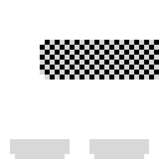

플레이어

버티저크로 위장하여 적의 기지에 침입한 스파이.
적의 기지를 최대한 난장판으로 만들라는 임무를 받았다.
버티저크로 위장하여 적의 기지에 침입한 스파이.
적의 기지를 최대한 난장판으로 만들라는 임무를 받았다.
공중에 떠 있는 경비병.
플레이어가 있는 수평 방향으로 총알을 발사하면서 일직선으로 날아온다.
천장과 바닥에 붙어 있는 경비병.
수직 방향으로 총알을 발사하면서 플레이어가 있는 방향으로 다가온다.
실제 게임에 등장하지 않는다.
v1.3 이후에 등장할 예정이었으나, 업데이트가 중단되면서 영원히 역사 속에 묻힌 캐릭터가 되었다.